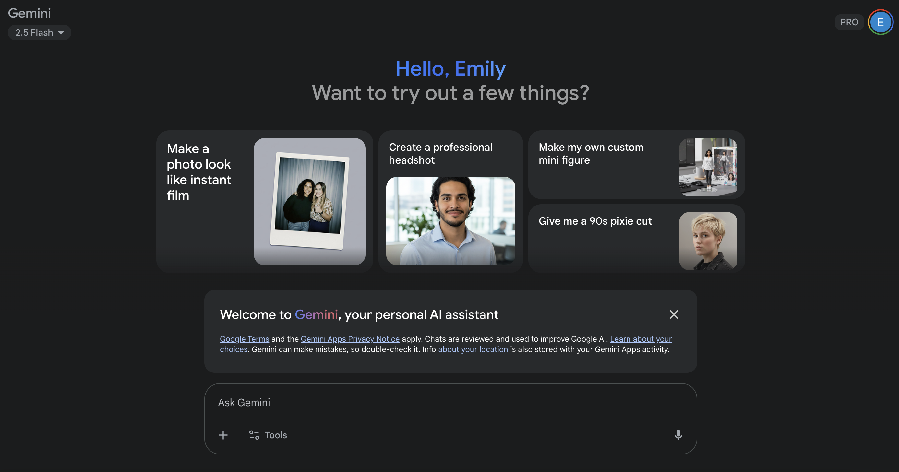
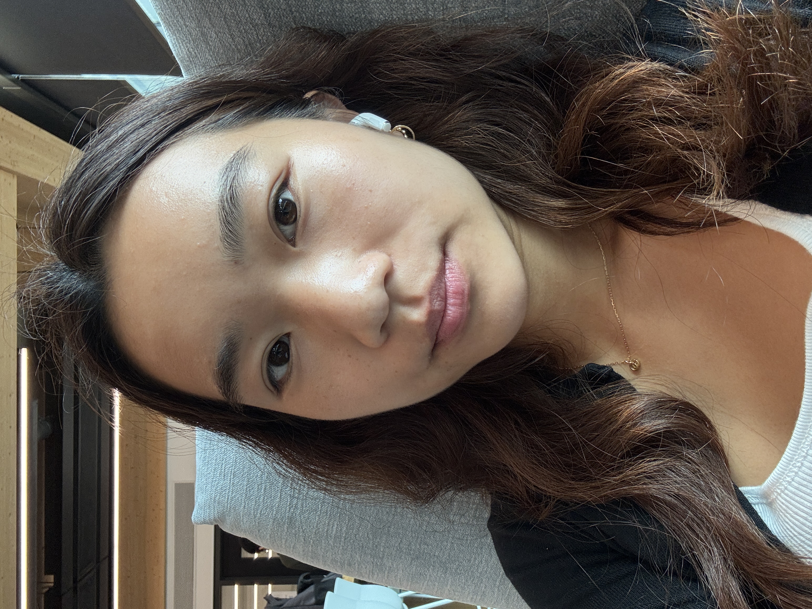

Intro
Last week, I experimented with ChatGPT-5 to create a professional headshot for me. However, I can’t say it did very well… The pictures it created technically had the same clothes and accessories, but my face was not my face. I did not recognize her. I forgot about this idea for a few days, but then today I got Google Gemini Pro because it is free for students for a year. I see this right when I open the page:

Wow! Look right at the center. Google Gemini advertises itself as being able to create a professional headshot, so let’s try it out! I clicked on that center panel from the home screen and this prompt was already written:
Prompt:
First ask me for a selfie. Transform my selfie into a fresh but professional image suitable for a social media profile. The lighting should be natural, flattering, and multidimensional. My head is slightly tilted so it doesn’t look stiff and it should look like I’m in a modern, bright office with a blurred background.
My thoughts: This prompt is pretty good in my opinion. It specifies the lighting, head position, and background which are not all features that I would think to intially add when I prompt an LLM. I like how they have this prompt ready for users to use.
Gemini-2.5 Flash then prompted me for a selfie and I gave it this:

Response:
Here’s a fresh, professional image suitable for a social media profile, with natural, flattering, and multidimensional lighting, a slight head tilt, and a modern, bright office with a blurred background:
This is SOOOO much better than ChatGPT’s response! The person in the picture still looks like me and it did exactly as the prompt said. I am in natural lighting, wearing business clothes, and in an office background. I’m especially impressed by the hair because that is what my hair normally looks like naturally and it did a good job of making it look similar but better than the frizzy hair I had from the rain in my initial picture. I want to see if it can make me smile.
Prompt:
can you make me smiling and facing more forward?
Response:
Absolutely! Here’s an updated version where you are smiling and facing more forward:

I guess it cannot predict what I look like smiling very well because this person is not me. I am also not facing more forward. I probably have to give it a reference of me smiling.
Prompt:
here’s a picture of me smiling. Can you redo the headshot?

Response:
I can certainly redo the headshot for you! Here’s a new professional headshot using your provided smiling image as a reference, maintaining the modern office background and professional aesthetic:
This picture still did not use the smile from the picture that I gave it. So, I tried again with prompts “you did not change the picture” and “you still did not change the smile”. However, this picture remained. The person in the picture definitely looks like me, but it still doesn’t look exactly like me. For example, I would not have her as my LinkedIn profile picture. Overall, the initial picture that had same expression as the picture I gave it was very good, but when I asked it to change and even gave it another reference picture, Gemini was stubborn and did not change.